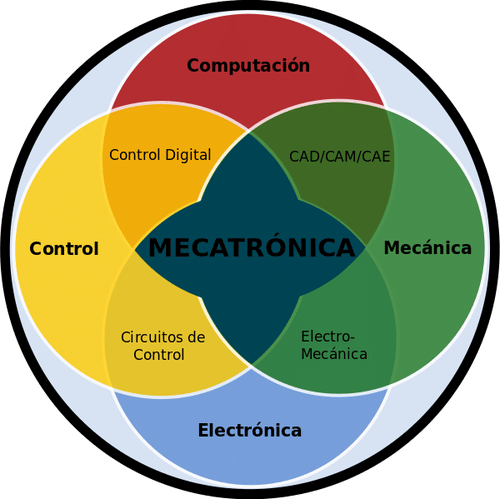
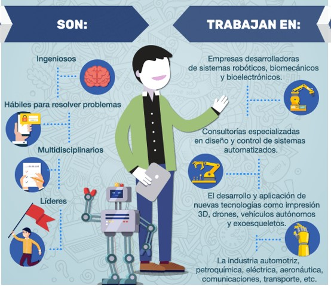
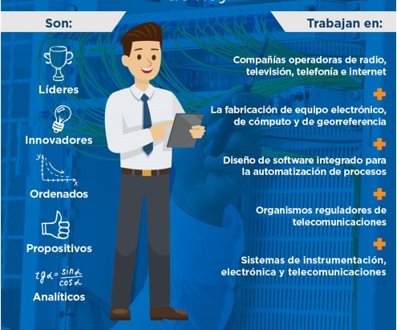

Contenido
- ¿Qué es la ingeniería?.
- Redes.
- Mecatrónica.
- Sistemas computacionales.
- ¿Preguntas?.
Ingeniería
- La ingeniería es la profesión en la cual el conocimiento de las ciencias matemáticas y naturales adquirido por el estudio, la experiencia
y la práctica se aplica con criterio a fin de desarrollar medios para utilizar de manera económica los materiales y las fuerzas de la naturaleza en beneficio de la humanidad.
Ingeniería
- El ingeniero se basa en el conocimiento de las ciencias matemáticas y naturales.
- La ingeniería es considerada un arte a la vez que una ciencia.
- El ingeniero tiene la responsabilidad del desarrollo tecnológico, económico social y político.
Ingeniería
- Tanto el ingeniero como el científico basan sus conocimientos en las ciencias matemáticas y físicas, la diferencia radica en la forma cómo usan ese conocimiento. Los ingenieros lo aplicación
para la construcción y diseño de nuevos dispositivos y procesos mientras que los científicos lo utilizan para adquirir y generar nuevo conocimiento.
Ingeniería
- La ingeniería busca soluciones económicas a problemas reales.
- Todo trabajo, resultado de la ingeniería, debe beneficiar a la humanidad.
- La ingeniería debe evaluar los diseños que provengan de él para asegurarse que los efectos positivos sobrepasen los negativos y sean para el beneficio público.
Ingeniería
- Ingeniería eléctrica.
- Ingeniería en computación.
- Ingeniería mecánica.
- Ingeniería civil.
- Ingeniería química.
- Ingeniería industrial.
- Ingeniería aeroespacial.
Ingeniería eléctrica
- Se ocupa de los dispositivos, corrientes y sistemas eléctricos y electrónicos
- Trabajan con equipo de baja y alta potencia, desde chips de computadoras hasta lineas de transmisión eléctrica.
- También se ocupan de la transmisión de señales de comunicación de un punto a otro y se estima que un 7% se dedica a esta actividad.
Ingeniería en computación
- Se dedican del diseño e implementación de sistemas digitales, así como la integración de la tecnología de las computadoras a un número cada vez mayor de sistemas.
- Además uno de sus objetivos es la aplicación de nuevos algoritmos de cómputo para la solución de problemas.
- Los ingenieros en computación diseñan e implementan nuevas aplicaciones usando lenguajes de programación de manera efectiva y rápida.
Ingeniería mecánica
- Es la que tiene que ver con la maquinaria, la energía y la manufactura o los métodos de producción y diseño de éstos.
- Entre sus actividades están el desarrollar turbinas hidraulicas, bombas para el desarrollo de energías, etc.
- Además tienen las habilidades para el desarrollo de motores de automóviles, aviones, etc.
Ingeniería civil
- Se encarga del diseño y construcción de edificios, transporte, sistemas de drenaje y alcantarillado entre otros.
- De igual forma hacen estudios de mapeo y mediciones de la superficie de la tierra.
- Diseñan y supervisan la construcción de puentes, túneles, grandes edificios, presas además de planificar carreteras y aeropuertos.
Ingeniería aeroespacial
- Se ocupa de todos los aspectos del vuelo de vehículos a todas velocidades y alturas.
- Estudian la aerodinámica, diseño estructural y control de vuelo de vehículos aéreos.
- Además buscan diseñar y construir vehículo aéreos de tal forma que puedan operarse con economía.
Ingeniería en redes
- Utiliza la ingeniería para la detección de problemas de red.
- Realiza el diseño de la infraestructura de red que sea funcional y segura.
- Tiene conocimientos de software y hardware para realizar actualizaciones a los sistemas de red.
- Realiza monitoreos de sistemas de redes para comprobar su optimo funcionamiento.
Ingeniero en mecatrónica
- Desarrollan soluciones a problemas usando procesos mecánicos, electrónicos e informáticos.
- Mantiene y mejora procesos y diseños industriales utilizando sistemas de control avanzados.
- Realiza análisis, modelado y simulación de sistemas complejos de ingeniería mecánica, electrónica e informatica.
Ingeniería en mecatrónica

Ingeniería en mecatrónica

Ing. en sistemas computacionales
Ing. en electrónica y telecom.
